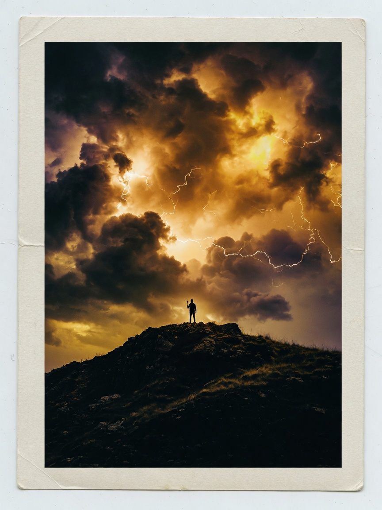

Meridian Lab
Research OS for financial intelligence teams — structure without sterility.
+ ARDEN VALE
Profile
Arden Vale is a visual & interaction designer crafting systems that feel human — interface, brand, and the quiet moments in between.
Currently designing AI products for research teams at Northwind Labs, a fictional product studio.
Now
I create cohesive systems and experiences across interface, brand, and interaction. I care about the small decisions that scale — systematic details, microinteractions, and moments that bring delight.
Stamps from the field — product, brand, and visual systems. Open ⌘K to jump anywhere.
Research OS for financial intelligence teams — structure without sterility.
Identity system for a makers’ collective: soft ink, sharp rules.
Editorial type experiments at the edge of poster and interface.
Studies, prints, and the long way around a simple idea.

Command menu powered by
cmdk
(MIT) and
react
(MIT), loaded from esm.sh — same open stack pattern common to modern ⌘K portfolios.
Press ⌘K / Ctrl+K.